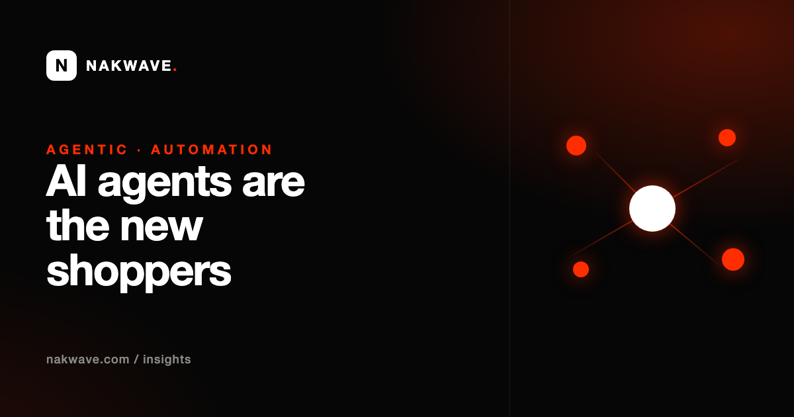

AI Agents Are the New Shoppers: Agentic Search and What It Means for Your Store

From "search" to "go do it for me"
For twenty years, search meant a human typing words and scanning links. Agentic AI breaks that model. Instead of "best running shoes for flat feet," a person now says "find and buy me the best-reviewed running shoes for flat feet under £120, size 10." An agent then visits sites, reads specs and reviews, weighs the options and acts — sometimes all the way to checkout.
That means a second audience is arriving on your website: not a person to be persuaded with hero images, but a program to be convinced with facts it can parse. If it can't read you cleanly, it moves on to a competitor it can.
What agents reward
Structured, unambiguous facts
Agents thrive on machine-readable data: Product schema with price, availability and specs; clear stock status; explicit shipping and return terms. The more of your key facts live in structured data rather than only in prose or images, the easier you are to shortlist.
Server-rendered content
Many AI crawlers and agents don't fully execute JavaScript. If your product details, prices or content only appear after client-side rendering, an agent may see a blank shell. Server-side rendering (or static HTML for the critical facts) is now a visibility requirement, not a performance nicety.
Clean semantics and a machine map
Semantic HTML, sensible headings and a current sitemap help agents navigate. An llms.txt file gives them a canonical summary of what you offer and where to find it — a low-cost signal that's easy to ship.
Consistency it can trust
Agents cross-check. If your price, name or availability disagrees across your site, your listings and your schema, the safe move for the agent is to pick the option it can describe without contradiction. Consistency is a ranking factor for machines just as it is for humans.
The uncomfortable shift for brands
Agentic commerce compresses your funnel. There may be no homepage visit, no retargeting window, no chance to upsell on the thank-you page — just a machine comparing you against three rivals on the facts. That sounds threatening, but it rewards exactly the businesses that have done the unglamorous work: accurate data, honest specs, real reviews and a site machines can read. Theatre loses; substance wins.
Where to start
You don't prepare for agents with a redesign. You prepare by making your facts legible: complete Product and Organization schema, server-rendered critical content, a clean sitemap and llms.txt, and specs that match everywhere. It's the same foundation that wins AI Overviews and AI citations today — agents just raise the stakes on getting it right.
Is your site legible to machines — or invisible to them?
Our free audit checks the exact signals AI engines and agents rely on: schema, crawlability, server rendering, llms.txt and citable content — with a prioritized fix list.
Run my free audit →